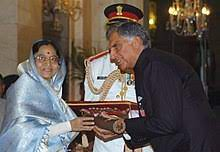
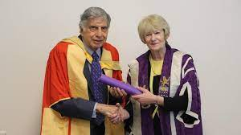

As the Chairman of Tata Group, he was able to achieve international recognition and prestige for his
company. The astounding financial success of the company brought the Tata Group to the New York Stock
Exchange and under his supervision the corporation became a global brand by acquiring many companies
including Tetley, Jaguar Land Rover, and Corus.
He was instrumental in the conception and building of Tata Nano and Tata Indica cars.
He is also a notable philanthropist and more than 65% of his share is invested in charitable trusts.
One of the primary goals of his life has been to raise the quality of life of Indians along with human
development.